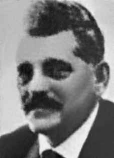

José
Roman
CIRCUNSTÂNCIAS DA MORTE
José Roman foi incumbido de transportar David Capistrano da Costa, também militante do PCB, recém-chegado da Europa, de Uruguaiana (RS) com destino a São Paulo (SP). O último contato dos militantes com familiares foi feito em 19 de março, quando Lídia, esposa de Roman, recebeu um telegrama do marido, no qual ele relatava que a operação havia sido bem sucedida e que ambos já se encontravam a caminho de São Paulo. Em 21 de março, entretanto, o filho de José Roman, Luís, recebeu um telefonema informando que seu pai havia sido preso. A família registrou queixa do desaparecimento e realizou pedidos de busca em diversos órgãos de segurança, mas não obteve nenhuma resposta significativa. As famílias de Roman e Capistrano entraram com pedido de habeas corpus em 25 de março de 1974, mas os órgãos de segurança negaram as prisões. De acordo com informações do ex-agente do Destacamento de Operações de Informações – Centro de Operações de Defesa Interna de São Paulo (DOI-CODI/SP) Marival Chaves Dias do Canto, divulgadas pela revista IstoÉ em 24 de março de 2004, os militantes teriam sido presos por agentes do Centro de Informações do Exército (CIE) comandados pelo coronel José Brant Teixeira, conhecido como “Dr. César”, e então teriam sido encaminhados para o DOI-CODI/SP. A informação foi reiterada pelo ex-agente em depoimento à Comissão Nacional da Verdade (CNV): Os dois presos, ele [David Capistrano] e José Roman dormiram no DOI. E coincidentemente eu estava chegando para trabalhar lá às oito horas da manhã e vi dois presos entrando no porta-malas de uma Veraneio. E quem estava lá? Rubens Gomes Carneiro, o senhor José Brant Teixeira e mais o senhor cabo Félix Freire Dias. Então eram três pessoas do CIE. De repente, aparece para mim depois o David Capistrano e o José Roman como pessoas desaparecidas. Ora! Eles dormiram no DOI. Em de maio de 1974, Lídia Roman enviou carta à Câmara dos Deputados informando sobre o desaparecimento do marido e solicitando ajuda para localizá-lo. Naquele mesmo ano, os familiares se encontraram com o general Golbery do Couto e Silva. Na reunião, intermediada pelo então Arcebispo de São Paulo Dom Paulo Evaristo Arns, o general se prontificou a solucionar o caso ainda naquele mês, mas nada aconteceu. Em janeiro de 1975, um relatório produzido por familiares de desaparecidos políticos foi encaminhado ao presidente Ernesto Geisel. Um mês depois, o então ministro da Justiça Armando Falcão fez circular nos jornais e televisão uma nota sobre o paradeiro dos desaparecidos, pela qual alegava que David Capistrano da Costa encontrava-se exilado na Tchecoslováquia. Na nota não havia informações sobre o paradeiro de José Roman. De acordo com o ex-sargento Marival Dias Chaves do Canto, em entrevista concedida à revista Veja, de 18 de novembro de 1992, Capistrano e José Roman teriam sido levados à “Casa da Morte” de Petrópolis e torturados até a morte; seus corpos, esquartejados, teriam sido jogados num rio. Doze anos depois, em março de 2004, Marival Chaves concedeu nova entrevista à revista IstoÉ, na qual declarou que os casos de Capistrano e José Roman estavam ligados a uma ampla ofensiva dos órgãos de segurança criada para desmantelar o PCB e executar seus dirigentes. Trata-se da ação que ficou conhecida como “Operação Radar”, coordenada por agentes do DOI-CODI/SP, em colaboração com agentes do CIE e do DOPS/SP, que vitimou, entre março de 1974 e janeiro de 1976, os militantes David Capistrano da Costa; José Roman; Walter de Souza Ribeiro; João Massena Melo; Luís Ignácio Maranhão Filho; Elson Costa; Hiran de Lima Pereira; Jayme Amorim de Miranda; Nestor Vera; Itair José Veloso; Alberto Aleixo; José Ferreira de Almeida; José Maximino de Andrade Netto; Pedro Jerônimo de Souza; José Montenegro de Lima, o Magrão; Orlando da Silva Rosa Bomfim Júnior; Vladimir Herzog; Neide Alves dos Santos; e Manoel Fiel Filho. Em 23 de julho de 2014, o ex-delegado do DOPS/ES Cláudio Guerra afirmou em depoimento prestado à Comissão Nacional da Verdade que o corpo de José Roman teria sido levado por ele da Casa da Morte em Petrópolis para ser incinerado na usina Cambahyba, na região de Campos dos Goytacazes, no norte do Rio de Janeiro, a fim de se impossibilitar a localização e a identificação de seus restos mortais. i A CNV verificou que Freddie Perdigão Pereira, em cuja equipe Cláudio Guerra trabalhava, prestava na época dos fatos serviços para o DOI/CODI do II Exército. Até a presente data, José Roman permanece desaparecido.
José Roman was tasked with transporting David Capistrano da Costa, also a PCB activist, who had recently arrived from Europe, from Uruguaiana (RS) to São Paulo (SP). The militants' last contact with family members was made on March 19, when Lídia, Roman's wife, received a telegram from her husband, in which he reported that the operation had been successful and that they were both already on their way to São Paulo. On March 21, however, José Roman's son, Luís, received a phone call informing him that his father had been arrested. The family filed a missing person report and made search requests to several security agencies, but did not receive any significant response. The families of Roman and Capistrano filed a request for habeas corpus on March 25, 1974, but security agencies denied the arrests. According to information from former agent of the Information Operations Detachment – São Paulo Internal Defense Operations Center (DOI-CODI/SP) Marival Chaves Dias do Canto, published by IstoÉ magazine on March 24, 2004, the militants were arrested by agents from the Army Information Center (CIE) commanded by Colonel José Brant Teixeira, known as “Dr. César”, and were then taken to the DOI-CODI/SP. The information was reiterated by the former agent in a statement to the National Truth Commission (CNV): The two prisoners, he [David Capistrano] and José Roman, slept at the DOI. And coincidentally, I was arriving to work there at eight o'clock in the morning and saw two prisoners getting into the trunk of a summer house. And who was there? Rubens Gomes Carneiro, Mr. José Brant Teixeira and Mr. Corporal Félix Freire Dias. So there were three people from CIE. Suddenly, David Capistrano and José Roman appear to me as missing people. Now! They slept at DOI. In May 1974, Lídia Roman sent a letter to the Chamber of Deputies informing her of her husband's disappearance and requesting help in locating him. That same year, family members met with General Golbery do Couto e Silva. At the meeting, mediated by the then Archbishop of São Paulo Dom Paulo Evaristo Arns, the general offered to resolve the case that month, but nothing happened. In January 1975, a report produced by relatives of missing politicians was sent to President Ernesto Geisel. A month later, the then Minister of Justice Armando Falcão circulated a note in the newspapers and on television about the whereabouts of the disappeared, in which he claimed that David Capistrano da Costa was in exile in Czechoslovakia. The note contained no information about José Roman's whereabouts. According to former sergeant Marival Dias Chaves do Canto, in an interview with Veja magazine on November 18, 1992, Capistrano and José Roman were taken to the “House of Death” in Petrópolis and tortured to death; their bodies, dismembered, would have been thrown into a river. Twelve years later, in March 2004, Marival Chaves gave a new interview to IstoÉ magazine, in which he declared that the cases of Capistrano and José Roman were linked to a broad offensive by security agencies created to dismantle the PCB and execute its leaders. This is the action that became known as “Operation Radar”, coordinated by agents from DOI-CODI/SP, in collaboration with agents from CIE and DOPS/SP, which killed, between March 1974 and January 1976, the militants David Capistrano da Costa; José Roman; Walter de Souza Ribeiro; João Massena Melo; Luís Ignácio Maranhão Filho; Elson Costa; Hiran de Lima Pereira; Jayme Amorim de Miranda; Nestor Vera; Itair José Veloso; Alberto Aleixo; José Ferreira de Almeida; José Maximino de Andrade Netto; Pedro Jerônimo de Souza; José Montenegro de Lima, Skinny; Orlando da Silva Rosa Bomfim Júnior; Vladimir Herzog; Neide Alves dos Santos; and Manoel Fiel Filho. On July 23, 2014, former DOPS/ES delegate Cláudio Guerra stated in a statement given to the National Truth Commission that José Roman's body had been taken by him from the House of Death in Petrópolis to be incinerated at the Cambahyba plant, in the Campos dos Goytacazes region, in the north of Rio de Janeiro, in order to make it impossible to locate and identify his remains. i The CNV verified that Freddie Perdigão Pereira, on whose team Cláudio Guerra worked, was providing services for the DOI/CODI of the II Army at the time of the events. To date, José Roman remains missing.
José Roman fue el encargado de transportar a David Capistrano da Costa, también activista del PCB, recién llegado de Europa, desde Uruguaiana (RS) hasta São Paulo (SP). El último contacto de los militantes con familiares se produjo el 19 de marzo, cuando Lídia, esposa de Román, recibió un telegrama de su marido, en el que le informaba que la operación había sido un éxito y que ambos ya estaban de camino a São Paulo. Sin embargo, el 21 de marzo, el hijo de José Román, Luís, recibió una llamada telefónica informándole que su padre había sido arrestado. La familia presentó una denuncia de persona desaparecida y realizó solicitudes de búsqueda a varios organismos de seguridad, pero no recibió ninguna respuesta significativa. Las familias de Román y Capistrano presentaron una solicitud de hábeas corpus el 25 de marzo de 1974, pero los organismos de seguridad negaron las detenciones. Según información del ex agente del Destacamento de Operaciones de Información – Centro de Operaciones de Defensa Interna de São Paulo (DOI-CODI/SP) Marival Chaves Dias do Canto, publicada por la revista IstoÉ el 24 de marzo de 2004, los militantes fueron detenidos por agentes del Centro de Información del Ejército (CIE) comandados por el coronel José Brant Teixeira, conocido como “Dr. César”, y luego trasladados al DOI-CODI/SP. La información fue reiterada por el ex agente en declaraciones ante la Comisión Nacional de la Verdad (CNV): Los dos detenidos, él [David Capistrano] y José Román, dormían en el DOI. Y casualmente llegaba a trabajar allí a las ocho de la mañana y vi a dos presos metiéndose en el maletero de una casa de verano. ¿Y quién estaba ahí? Rubens Gomes Carneiro, Sr. José Brant Teixeira y Sr. Cabo Félix Freire Dias. Entonces había tres personas del CIE. De repente, David Capistrano y José Roman se me aparecen como personas desaparecidas. ¡Ahora! Dormieron en el DOI. En mayo de 1974, Lídia Roman envió una carta a la Cámara de Diputados informándole de la desaparición de su marido y solicitando ayuda para localizarlo. Ese mismo año, los familiares se reunieron con el general Golbery do Couto e Silva. En la reunión, mediada por el entonces arzobispo de São Paulo, Dom Paulo Evaristo Arns, el general ofreció resolver el caso ese mes, pero no pasó nada. En enero de 1975, se envió al presidente Ernesto Geisel un informe elaborado por familiares de políticos desaparecidos. Un mes después, el entonces ministro de Justicia, Armando Falcão, hizo circular en periódicos y televisión una nota sobre el paradero de los desaparecidos, en la que afirmaba que David Capistrano da Costa se encontraba exiliado en Checoslovaquia. La nota no contenía información sobre el paradero de José Roman. Según el ex sargento Marival Dias Chaves do Canto, en una entrevista con la revista Veja el 18 de noviembre de 1992, Capistrano y José Roman fueron llevados a la “Casa de la Muerte” en Petrópolis y torturados hasta la muerte; sus cuerpos, desmembrados, habrían sido arrojados a un río. Doce años después, en marzo de 2004, Marival Chaves concedió una nueva entrevista a la revista IstoÉ, en la que declaró que los casos de Capistrano y José Román estaban vinculados a una amplia ofensiva de los organismos de seguridad creados para desmantelar el PCB y ejecutar a sus dirigentes. Se trata de la acción que pasó a denominarse “Operación Radar”, coordinada por agentes del DOI-CODI/SP, en colaboración con agentes del CIE y del DOPS/SP, que mató, entre marzo de 1974 y enero de 1976, a los militantes David Capistrano da Costa; José Román; Walter de Souza Ribeiro; João Massena Melo; Luís Ignacio Maranhão Filho; Elson Costa; Hirán de Lima Pereira; Jayme Amorim de Miranda; Néstor Vera; Itair José Veloso; Alberto Aleixo; José Ferreira de Almeida; José Maximino de Andrade Netto; Pedro Jerónimo de Souza; José Montenegro de Lima, Flaco; Orlando da Silva Rosa Bomfim Júnior; Vladímir Herzog; Neide Alves dos Santos; y Manoel Fiel Filho. El 23 de julio de 2014, el ex delegado del DOPS/ES, Cláudio Guerra, afirmó en una declaración ante la Comisión Nacional de la Verdad que el cuerpo de José Roman había sido sacado por él de la Casa de la Muerte en Petrópolis para ser incinerado en la planta de Cambahyba, en la región de Campos dos Goytacazes, en el norte de Río de Janeiro, con el fin de imposibilitar la localización e identificación de sus restos. i La CNV constató que Freddie Perdigão Pereira, en cuyo equipo trabajaba Cláudio Guerra, se encontraba prestando servicios para el DOI/CODI del II Ejército en el momento de los hechos. A la fecha José Román continúa desaparecido.